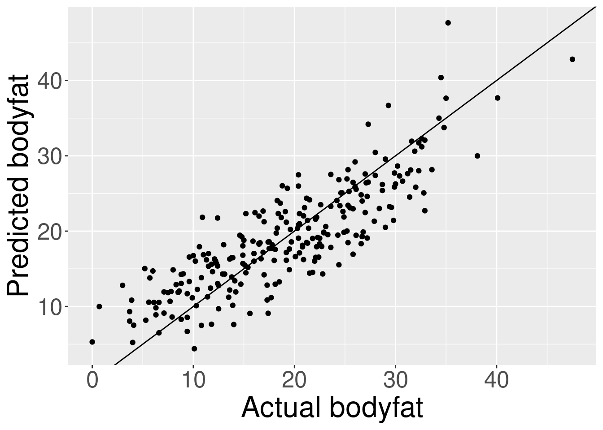
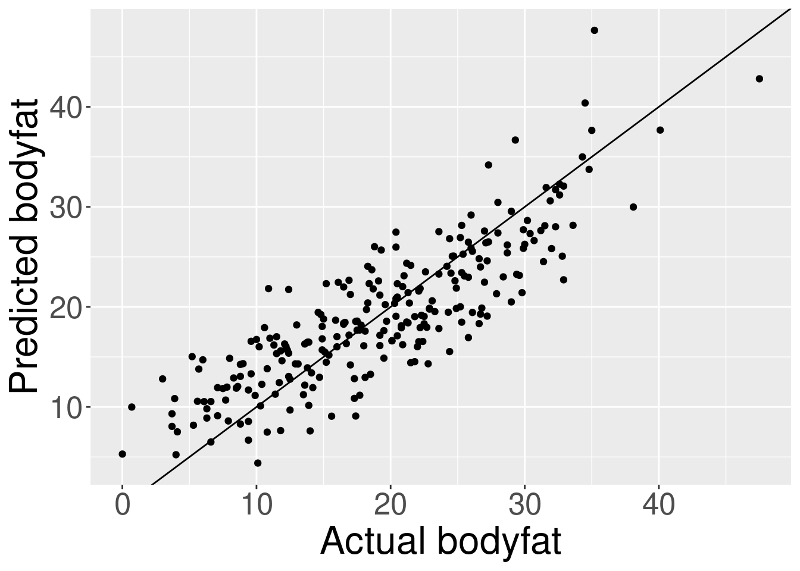

reg <- lm(bodyfat ~ Abdomen + Height + Weight, bodyfat_df)
print(reg$coefficients)(Intercept) Abdomen Height Weight
-36.6147193 0.9515631 -0.1270307 -0.1307606 PlotFit(reg)
\(\LaTeX\)
Recall our bodyfat prediction problem. Suppose we decide we want to predict bodyfat using the abdomen measurement, height, and weight; these variables, plus a constant, will be included in \(\xv_n\), and we’ll take \(\y_n\) to be measured bodyfat, and regress \(\y_n \sim \xv_n^\trans Bv\). (We will talk later about how to choose which regressors to include, but for now we’ll take them as fixed.)
We fit a line using OLS, giving us \(\bvhat\).
reg <- lm(bodyfat ~ Abdomen + Height + Weight, bodyfat_df)
print(reg$coefficients)(Intercept) Abdomen Height Weight
-36.6147193 0.9515631 -0.1270307 -0.1307606 PlotFit(reg)
Later, a new person will come into the doctor’s office with measurements \(\xv_\new\). We would like to know their \(\y_\new\), and are considering approximate it with \(\yhat_\new = \xv_\new^\trans Bvhat\), hoping that \(\yhat_\new Approx \y_\new\).
Here are some questions to ask:
Without more assumptions about how the data were gathered, and what sorts of individuals we expect to see in the future, these questions are impossible to answer at all, much less quantitatively.
In order to attempt to provide useful answers to these questions — or at least approximate answers — we will be imposing stochastic assumptions. This means we will model the data as having come from a random distribution, and use probability calculus to make statements about the errors we are likely to make. This does not mean the data did come from a random distribution, nor does it mean that the analysis is worthless if the data did not come from a random distribution. I like to think that we are using stochastic models as metaphors for what we don’t know. Ideally these metaphors are both convincing but also falsifiable.
We will study a variety of stochastic models, but they will all involve the following assumption:
The pairs \((\xv_n, \y_n)\) are drawn IID from some distribution.
The benefit of Assumption 1 is that we can use asymptotics to study the behavior of the least squares fit when \(N\) is large. This is good beacause (a) \(N\) is at least sometimes large and (b) it’s much harder to do statistical inference without aysmpotitics. Additionally, a lot of classical statistical theory that is still in use is asymptotic in nature, and so it is good to critically understand asymptotics in order to understand a lot of statistical practice, even (or especially) questionable statistical practice.
Describe a circumstance when Assumption 1 is reasonable in our bodyfat example, and one where it is unreasonable.
Asymptotic answers to our questions will come down to understanding the stochastic behavior of \(Bvhat\) as \(N\) gets large, and \(Bvhat\) is a vector, which is computed from matrices. So we need to extend the asymptotics you know about scalar-valued quantities to vector and matrix valued-quantities.
There are essentially three asymptotic results we’ll need:
Some authors use capital letters to denote random variables, and lower-case letters to denote their realizations. I will not do so since that will conflict with the existing matrix notation. Though I recognize the importance of differentiating between random variables and their realizations, I’m not sure I want to commit right now to one particular notation. For now I will use tildes: \(\RV{\x}\) will be a random variable, and \(\x\) a realization.
Hopefully future lecture notes will settle on one consistent solution.
A scalar-valued random variable \(\RV{\x}\) is formally a mapping that assigns probabilities to sets of possible values that \(\RV{\x}\) can take. That is, for any legitimate set \(A\), we can evaluate \(\prob{\RV{\x} \in A}\), in a way that respects common-sense rules of probability:
Many of the random variables we’ll encounter in this course have densities, which give probabilities as integrals. For example, if \(\RV{\x}\) has a density \(\dens{x}\), then
\[ \prob{\RV{\x} \in A} = \int_A \dens{x} dx. \]
Sadly the notation for densities is often ambiguous. Different random variables have different densities, of course, and they are all denoted with the letter \(\dens{\cdot}\). The argument is typically used to denote which random variable the density applies to, as I have done here: \(\dens{x}\) is the density for the random variable \(\RV{\x}\) evaluated at the point \(x\). Perhaps it would be better to write \(p_{\RV{\x}}(x)\), but often this is not done, and it is hopefully clear from the context precisely which density we mean.
The density is useful to define expectations of functions of \(\RV{\x}\). Specifically, for a (sufficiently well-behaved) function \(f(x)\),
\[ \expect{f(\RV{\x})} = \int f(x) \dens{x} dx. \]
An important property of expectation is that it’s linear. That means that, for any fixed numbers (not random variables!) \(a\) and \(b\), we have
\[ \expect{a \RV{\x} + b} = a\expect{\RV{\x}} + b. \]
This property follows from linearity of the integral.
Two special expectations are particularly important: \(f(x) = x\) and \(f(x) = x^2\). The expectations of these functions correspond to the “first and second moments” of \(\RV{\x}\). In principle, these moments may not be finite, though in this class we will typically assume that they are finite.
The variance of a random variable, when it exists, is defined in terms of these moments as \[ \var{\RV{\x}} := \expect{\x^2} - \expect{\x}^2 = \expect{(\x - \expect{\x})^2}. \]
The right hand side shows that the variance can never be negative, although it can be zero.
Using linearity of expectation, what is \(\var{a \RV{\x}}\)?
There are two important limit theorems that we will use: laws of large numbers (LLN) and central limit theorems (CLT). In this class I will not worry too much about getting the strongest possible results (e.g., weakest possible assumptions for a particular convergence guarantee). So I’ll choose conditions that are simple to work with.
First, let’s state and prove a LLN. Suppose \(\RV{\x}_n\) are independent random variables for \(n =1, \ldots, \infty\) such that \(\max_n \var{\RV{\x}_n} < \infty\). That is, every variance is finite and the variances do not diverge.
Actually, all we need is \(\lim_{N\rightarrow\infty} \max_{n=1,\ldots,N} \frac{1}{N} \var{\RV{\x}_n} = 0\), which is more convenient when we actually use this for the fixed regressor setting, but which complicates the exhibition here.
Write \(\expect{\RV{\x}_n} = \mu_n\) and assume that \(\meann \mu_n \rightarrow \overline{\mu} < \infty\). Then consider the random variable \[ \overline{x} := \frac{1}{N} \sumn \RV{\x}_n. \]
We can see that
\[ \begin{aligned} \expect{\overline{x}} ={}& \meann \mu_n \\ \var{\overline{x}} ={}& \ \expect{\left(\overline{x} - \meann \mu_n\right)^2} \\ ={}& \expect{\left(\meann (\RV{\x}_n - \mu_n) \right)^2} \\ ={}& \frac{1}{N^2} \sumn \expect{(\RV{\x}_n - \mu_n)^2} \\ \le{}& \frac{1}{N^2} N \max_n \var{\RV{\x}_n} \rightarrow 0 \quad\textrm{as }N\rightarrow \infty. \end{aligned} \]
A random variable with zero variance is just a constant, so we have shown that \(\overline{x}\) converges to the constant \(\overline{\mu}\), which is the limit of \(\meann \mu_n\). (Markov’s theorem gives a formal proof of convergence in probability, but I think that’s beyond the scope of this class.) \[ \overline{x} \rightarrow \overline{\mu} \quad \textrm{ as }N\rightarrow \infty. \]
Note that in the preceding statement, \(\overline{x}\) is a random variable, but \(\overline{\mu}\) is a constant.
If \(\mu_n = \mu = \overline{\mu}\), then this gives the familiar LLN from introductory probability, but this more general form will be useful in regression.
The normal distribution is special because it is the limit of a rescaled average. Take the setting of the previous example, and recall that, as \(N \rightarrow \infty\),
\[ \overline{x} - \overline{\mu} = \meann (\RV{\x}_n - \mu_n) \rightarrow 0. \]
One might note that, by the same argument of the previous section,
\[ \var{N (\overline{x} - \overline{\mu})} \rightarrow \infty. \]
That is, if you scale \(\overline{x} - \overline{\mu}\) by \(N\), for large \(N\), you get a random variable that takes arbitrarily large values with nonzero probability. However,
\[ \begin{aligned} \var{\sqrt{N} \overline{x}} ={}& \ \expect{\left(\sqrt{N} \overline{x} - \sqrt{N} \meann \mu_n\right)^2} \\ ={}& \expect{\left(\sqrt{N} \meann (\RV{\x}_n - \mu_n) \right)^2} \\ ={}& \frac{1}{N} \sumn \expect{(\RV{\x}_n - \mu_n)^2} \\ ={}& \meann \var{\RV{\x}_n}, \end{aligned} \]
a quantity that might reasonably converge to a constant, giving \(\sqrt{N} (\overline{x} - \overline{\mu})\) converging to a nondegenerate, but also nondivergent, random variable, as long as \[ \meann \var{\RV{\x}_n} \rightarrow \overline{v}. \]
(Note that the limit must be finite by assumption, but we do need to additionally assume that the limit exists.)
In fact, the CLT says something stronger. Not only does \(\sqrt{N} (\overline{x} - \overline{\mu})\) converge to a nicely behaved random variable, but the variable it converges to is normally distributed:
\[ \sqrt{N} (\overline{x} - \overline{\mu}) = \frac{1}{\sqrt{N}} \sumn (\RV{\x}_n - \mu_n) \rightarrow \RV{\z} \quad\textrm{where }\RV{\z} \sim \gauss{0, \overline{v}}. \]
I won’t prove this here, but you can find lots of references that do prove it. As above, taking \(\mu_n = \mu = \overline{\mu}\) and \(\var{\RV{\x}_n} = \overline{v}\) gives the familiar IID result.